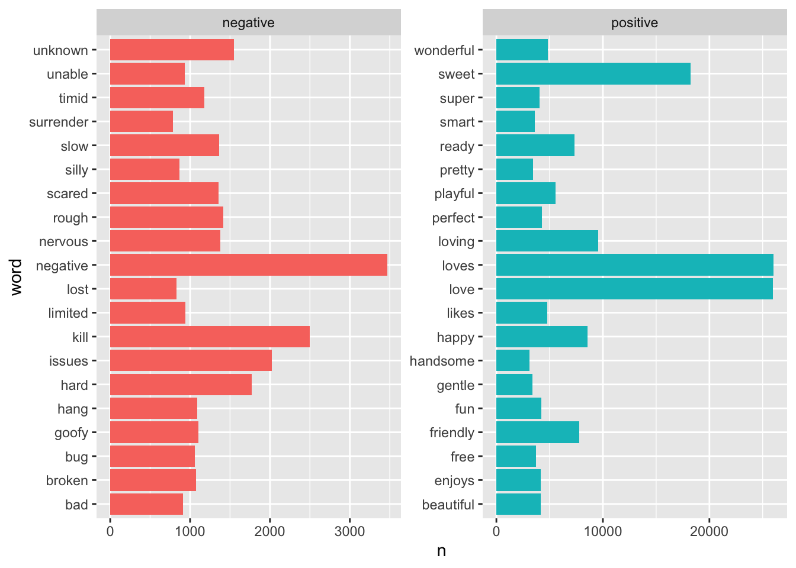
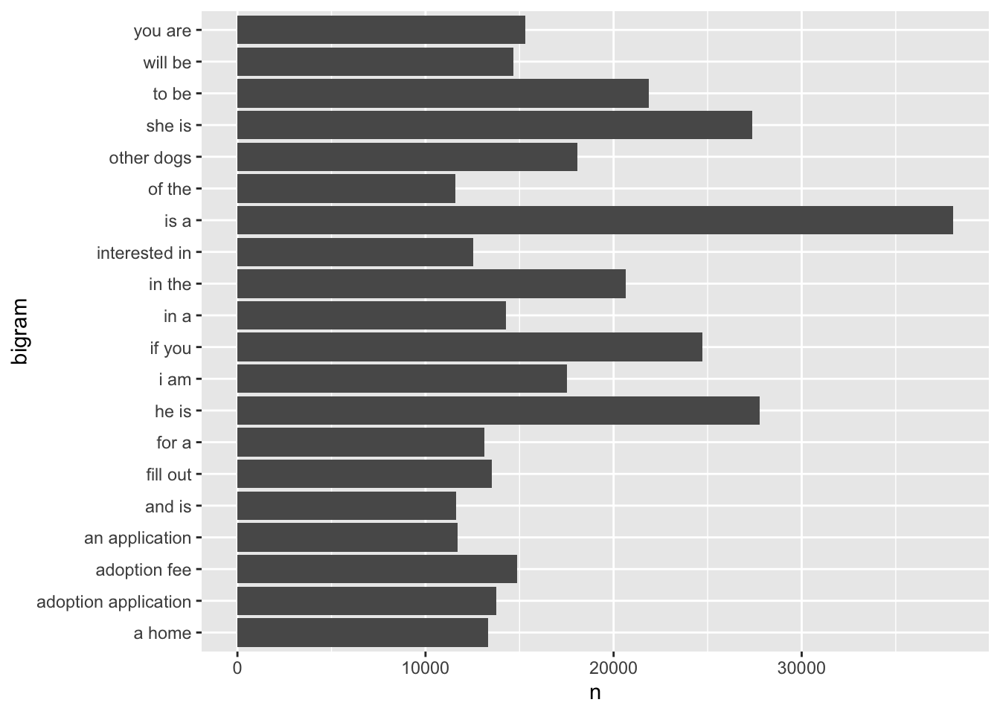

The dog_descriptions data frame explores some facts about many, many dogs available for adoption. The data frame has many variables, and I’ll be focusing on 7 of them.
data dictionary
id - unique identifier of each dog
breed_primary - primary breed of each dog
age - age of each dog, either baby, young, adult, or senior
sex - sex of each dog, either male or female
size - size of each dog, either small, medium, or large
name - name of each dog
description - description of each dog
Note
As you will see, lots of the code below does not work. I really struggled with this project. Most of the code I tried to do did not work, and I could not figure out how to get it to. I admittedly started this assignment later than I should have, though I still dedicated many hours to it. By the time I realized I was in trouble, it was too late to reach out for help. Totally on me! I just wanted to write this disclaimer, explaining why this report is the way it is. Once I started to realize I wouldn’t have time to fix all my code, I started to leave the code behind instead of deleting it, and I have explained below what I was trying to do. There’s a lot that I deleted along the way, so I did attempt more than what’s below. So sorry!
Warning: One or more parsing issues, call `problems()` on your data frame for details,
e.g.:
dat <- vroom(...)
problems(dat)
Rows: 58180 Columns: 36
── Column specification ────────────────────────────────────────────────────────
Delimiter: ","
chr (22): org_id, url, species, breed_primary, breed_secondary, color_prima...
dbl (1): id
lgl (11): breed_mixed, breed_unknown, fixed, house_trained, declawed, speci...
dttm (1): posted
date (1): accessed
ℹ Use `spec()` to retrieve the full column specification for this data.
ℹ Specify the column types or set `show_col_types = FALSE` to quiet this message.
isolating desired columns
since the above seven variables are the only ones I’ll be looking at, I wanted to make a dataset with only those variables.
Warning in inner_join(., get_sentiments("bing")): Each row in `x` is expected to match at most 1 row in `y`.
ℹ Row 42448 of `x` matches multiple rows.
ℹ If multiple matches are expected, set `multiple = "all"` to silence this
warning.
dog_sentiment
# A tibble: 3,096 × 3
word n sentiment
<chr> <int> <chr>
1 loves 26017 positive
2 love 25948 positive
3 sweet 18234 positive
4 loving 9573 positive
5 happy 8585 positive
6 friendly 7759 positive
7 ready 7317 positive
8 playful 5579 positive
9 wonderful 4819 positive
10 likes 4766 positive
# … with 3,086 more rows
# making this dataframe for later!dog_sentiment2 <- dog_descrip %>%inner_join(get_sentiments("bing"))
Joining with `by = join_by(word)`
Warning in inner_join(., get_sentiments("bing")): Each row in `x` is expected to match at most 1 row in `y`.
ℹ Row 2561246 of `x` matches multiple rows.
ℹ If multiple matches are expected, set `multiple = "all"` to silence this
warning.
this is a simple table of the most frequent words with eithe positive or negative sentiment
# A tibble: 416 × 1
n
<int>
1 647
2 289
3 221
4 157
5 113
6 91
7 75
8 62
9 61
10 60
# … with 406 more rows
dog_sentiment
# A tibble: 3,096 × 3
word n sentiment
<chr> <int> <chr>
1 loves 26017 positive
2 love 25948 positive
3 sweet 18234 positive
4 loving 9573 positive
5 happy 8585 positive
6 friendly 7759 positive
7 ready 7317 positive
8 playful 5579 positive
9 wonderful 4819 positive
10 likes 4766 positive
# … with 3,086 more rows
this plots the most frequent words from the descriptions, specifically the 20 most frequent of the negative sentiment, and 20 most frequent of the positive sentiment
dog_sentiment %>%group_by(sentiment) %>%slice_max(n, n =20) %>%ggplot(aes(n, word, fill = sentiment)) +geom_col(show.legend =FALSE) +facet_wrap(~ sentiment, scales ="free")

question 2
bigram analysis of dog descriptions
I had some luck with this code, but not quite enough.
here, I added the bigrams column to the data frame
dog_bigrams <- dogs %>%unnest_tokens(bigram, description, token ="ngrams", n =2)dog_bigrams
# A tibble: 8,363,430 × 7
id breed_primary age sex size name bigram
<dbl> <chr> <chr> <chr> <chr> <chr> <chr>
1 46042150 American Staffordshire Terrier Senior Male Medium harley harley is
2 46042150 American Staffordshire Terrier Senior Male Medium harley is not
3 46042150 American Staffordshire Terrier Senior Male Medium harley not sure
4 46042150 American Staffordshire Terrier Senior Male Medium harley sure how
5 46042150 American Staffordshire Terrier Senior Male Medium harley how he
6 46042150 American Staffordshire Terrier Senior Male Medium harley he wound
7 46042150 American Staffordshire Terrier Senior Male Medium harley wound up
8 46042150 American Staffordshire Terrier Senior Male Medium harley up at
9 46042150 American Staffordshire Terrier Senior Male Medium harley at shelter
10 46042150 American Staffordshire Terrier Senior Male Medium harley shelter in
# … with 8,363,420 more rows
I can’t remove the stopwords, which I believe is because I have no column for each singular word. I couldn’t figure out how to add a word column
since there are stop words, this plot isn’t the most meaningful. however, it does show the most common bigrams, and clearly, many of the descriptions talk about how to get the dog — with the application and adoption fee.
dog_bigrams %>%count(bigram, sort =TRUE) %>%slice_max(n, n =20) %>%ggplot(aes(n, bigram)) +geom_col()

mini question
What are the most popular names? How do names interact with age and sex?
here, I just wanted to see the most popular names. not surprised by bella or buddy!
`summarise()` has grouped output by 'name'. You can override using the
`.groups` argument.
# A tibble: 27,453 × 3
# Groups: name [20,274]
name age n
<chr> <chr> <int>
1 bella Adult 143
2 buddy Adult 107
3 max Adult 102
4 duke Adult 93
5 daisy Adult 91
6 rocky Adult 87
7 lucy Adult 85
8 molly Adult 84
9 charlie Adult 81
10 coco Adult 77
# … with 27,443 more rows
question 3
relationship between name, age, and sex
I thought it’d be interesting to look at the relationship between name, age, and sex, and see if there were any patterns. specifically, I wanted to look at name v age and name v sex.
the goal with this plot was to see the 20 most popular names for each age. however, I couldn’t get it to limit to the top 20. when removing the code line ‘slice(1:20)’ the code runs, but the plot is incredibly unhelpful.
dogs %>%group_by(name, age) %>%summarise(n =n()) %>%arrange(desc(n)) %>%slice(1:20) %>%ggplot(aes(x = name, y = age, fill = age) ) +geom_jitter()
this code runs, and tells us that for the most popular name, bella, most dogs are adult, and all but 1 are female.